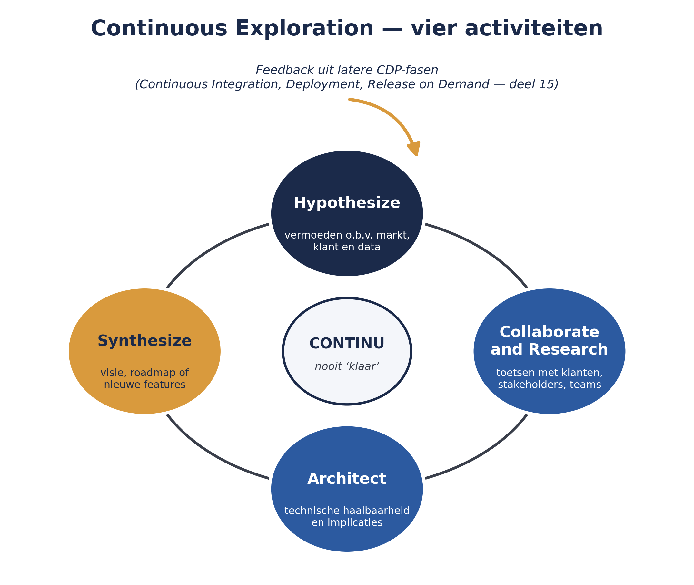
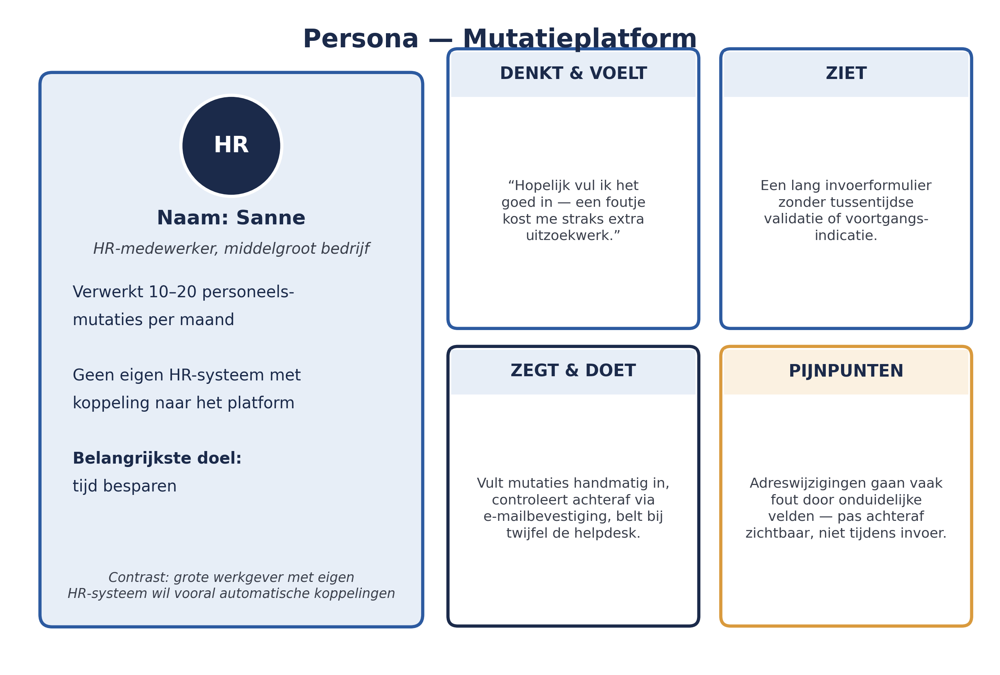

Weten wat de moeite waard is: Continuous Exploration
Dit deel verlaat de RTE-lijn van deel 12-13 en verdiept een andere ART-niveau rol uit deel 4: Product Management. Waar deel 6 al behandelde hoe features worden geprioriteerd zodra ze eenmaal op de ART Backlog staan, gaat dit deel over de stap dáárvóór: hoe weet Product Management überhaupt wat de moeite waard is om als feature te formuleren?
4secties
±1,5udagdeel + huiswerk
8controlevragen
4CE-activiteiten
Positionering. Deze cursus is een voorbereiding op de certificeringen SAFe Agilist (SA) en SAFe Practitioner (SP) van Scaled Agile, en uitdrukkelijk geen vervanging van het officiële SAFe-curriculum — dat wordt uitsluitend aangeboden via geautoriseerde Scaled Agile Partners. Voor terminologie en structuur volgen wij SAFe 6.0, de actuele versie van het Core-raamwerk.
Niveau 2: 11 Van ART naar Solution Train → 12 RTE-zwaartepunt I → 13 RTE-zwaartepunt II → 14 Agile Product Management (hier) → 15 Continuous Delivery Pipeline → 16 Architectural runway → 17 LPM I: strategie & budgets → 18 LPM II: portfolio kanban → 19 Meten: flow metrics & OKR's → 20 Governance & compliance → 21 AI-Native II → 22 Examentraining + capstone
01
Continuous Exploration: vier activiteiten
⏱ 16 min
Continuous Exploration (CE) is het voortdurend verkennen van markt- en klantbehoeften, het scherpstellen van een visie, en het vertalen daarvan naar een backlog van uitvoerbare features. CE is de eerste van vier fasen van de Continuous Delivery Pipeline — het geheel van workflows waarmee een idee uiteindelijk als waarde bij de klant terechtkomt. De andere drie fasen (Continuous Integration, Continuous Deployment, Release on Demand) komen in deel 15 aan bod.
CE bestaat uit vier samenhangende activiteiten:
Hypothesize — een vermoeden formuleren over wat waarde zou opleveren voor de klant, gebaseerd op marktonderzoek, klantfeedback en data-analyse. Dit is nadrukkelijk een hypothese, geen zekerheid — een direct gevolg van principe 3 uit deel 2 (variabiliteit, opties openhouden).
Collaborate and Research — de hypothese toetsen door samen te werken met klanten, stakeholders en teams: gesprekken, marktonderzoek, data verzamelen.
Architect — de technische haalbaarheid en architecturale implicaties verkennen, in samenspraak met System Architect/Engineering (deel 4).
Synthesize — de bevindingen samenbrengen tot een concrete, uitvoerbare richting: een aangescherpte visie, roadmap-update, of nieuwe features op de ART Backlog.

Figuur 14-1 — de vier activiteiten van Continuous Exploration als doorlopende cyclus, met feedback vanuit latere CDP-fasen
Dit proces is nooit "klaar" — het is continu, en de uitkomsten van latere fasen in de Continuous Delivery Pipeline (met name feedback uit Release on Demand, deel 15) voeden weer nieuwe hypotheses. Dat is waarom het "Continuous" heet: niet één keer een marktonderzoek doen en dan bouwen, maar voortdurend leren en bijstellen.
Controlevragen
Uit Werkboek deel 14, Zelftoets vraag 1 en 2, en Opdracht 14.2
1Noem de vier fasen van de Continuous Delivery Pipeline, en welke daarvan behandelt dit deel?Toon antwoord
Continuous Exploration, Continuous Integration, Continuous Deployment, Release on Demand; dit deel behandelt Continuous Exploration.
2Noem de vier activiteiten van Continuous Exploration.Toon antwoord
Hypothesize, Collaborate and Research, Architect, Synthesize.
3Leg uit waarom Continuous Exploration expliciet met "hypotheses" werkt in plaats van met vaststaande aannames. Verbind je antwoord aan een principe uit deel 2.Toon antwoord
Hypotheses laten ruimte om bij te stellen zodra nieuwe informatie beschikbaar komt — in lijn met principe 3 (variabiliteit; opties openhouden in plaats van te vroeg vastleggen). Een vaststaande aanname zou hetzelfde risico lopen als het WGP 2.0-ontwerp: te vroeg vastgelegd, niet meer bij te stellen toen de praktijk anders bleek.
02
Klantgerichtheid en design thinking
⏱ 15 min
Continuous Exploration steunt op design thinking: klantgericht denken dat begint bij het begrijpen van het probleem, niet bij het bedenken van een oplossing. Een paar concrete technieken die Product Management hierbij gebruikt:
Marktsegmentatie — een markt opdelen in groepen met vergelijkbare behoeften, om aandacht te richten op het segment dat het meest waardevol is om te bedienen.
Persona's — een concreet, herkenbaar profiel van een type klant, gebruikt om beslissingen te toetsen ("zou deze feature echt helpen voor [persona]?").
Empathy mapping en journey-analyse — je verplaatsen in wat de klant denkt, voelt, ziet en doet tijdens het gebruik van een dienst, om pijnpunten te vinden die niet uit cijfers alleen blijken.
Voor Meridiaan zou een persona voor het Mutatieplatform bijvoorbeeld een HR-medewerker bij een middelgroot bedrijf kunnen zijn, die maandelijks tien tot twintig personeelsmutaties doorgeeft en vooral tijd wil besparen — in tegenstelling tot een grote werkgever met een eigen HR-systeem die vooral behoefte heeft aan geautomatiseerde koppelingen.
Controlevraag
Uit Werkboek deel 14, Zelftoets, vraag 3
1Wat is het verschil tussen design thinking en "gewoon bedenken wat een goede feature zou zijn"?Toon antwoord
Design thinking begint bij het begrijpen van het klantprobleem vóór er aan een oplossing wordt gedacht; "gewoon bedenken" start vaak al bij een oplossing zonder het onderliggende probleem eerst te toetsen.
03
Visie en roadmap: verdieping vanuit Product Management
⏱ 16 min
Deel 7 introduceerde de Vision en Roadmap van een ART als onderdeel van PI Planning-voorbereiding. Vanuit Product Management bezien, zijn dit geen eenmalige documenten maar de synthese-uitkomst van doorlopende Continuous Exploration. Twee punten verdienen hier extra aandacht:
Roadmap-flexibiliteit. Een roadmap moet richting geven, maar mag niet zo star zijn dat nieuwe inzichten uit CE er niet meer in passen. Dit is dezelfde toepassing van principe 3 uit deel 2 die u in deel 7 al zag bij het "grover worden verder in de tijd" — hier komt daar de reden nog concreter bij: als de roadmap te gedetailleerd vastligt, kan Product Management een goed onderbouwde bijstelling niet meer doorvoeren zonder het hele plan te ondermijnen.
Van hypothese naar feature. Niet elke hypothese wordt een feature. Een deel van Continuous Exploration eindigt in "dit blijkt geen waarde te hebben" — en dat is een goede uitkomst, geen mislukking. Vergelijk dit met WGP 2.0, waar aannames over wat werkgevers nodig hadden, nooit systematisch werden getoetst voordat er werd gebouwd.
De andere kant van flexibiliteit
Een roadmap die te flexibel is, verliest zijn functie als stabiel richtpunt: teams weten dan nooit meer waar ze aan toe zijn, en Vision en Roadmap raken los van elkaar. Roadmap-flexibiliteit is dus geen vrijbrief om voortdurend van koers te veranderen, maar het bewust openhouden van ruimte voor goed onderbouwde bijstelling.
Controlevragen
Uit Werkboek deel 14, Opdracht 14.4 — roadmap-flexibiliteit
1Continuous Exploration levert een sterke aanwijzing op dat een geplande feature (over twee PI's) eigenlijk geen waarde toevoegt, terwijl een niet-geplande feature juist veel waarde blijkt te hebben. Wat zou een te starre roadmap hier doen, en waarom is dat een probleem?Toon antwoord
Een te starre roadmap zou de niet-geplande, waardevolle feature negeren en tijd blijven besteden aan de feature die geen waarde blijkt te hebben — verspilling die met betere informatie voorkomen had kunnen worden.
2Wat zou een flexibele roadmap in dat scenario doen?Toon antwoord
Een flexibele roadmap neemt de nieuwe inzichten op, stelt de volgorde bij, en communiceert die aanpassing transparant naar de ART.
3Welk risico ontstaat als een roadmap juist té flexibel is — nooit een stabiele richting biedt?Toon antwoord
De roadmap verliest zijn functie als stabiel richtpunt — teams weten dan nooit meer waar ze aan toe zijn, en Vision (deel 7) en Roadmap raken los van elkaar.
04
Terug naar Meridiaan: CE voor het Mutatieplatform
⏱ 13 min
Stel dat Product Management van een van de ARTs binnen de Solution Train Mutatieplatform een signaal krijgt dat werkgevers vaak fouten maken bij het doorgeven van een adreswijziging. Continuous Exploration zou er als volgt uitzien: eerst een hypothese ("een stapsgewijze, gevalideerde invoerflow vermindert fouten"), dan onderzoek (gesprekken met een aantal HR-medewerkers, data over waar in het huidige proces fouten ontstaan), dan een architecturale verkenning (kan dit binnen de bestaande BRP-koppeling, of is een nieuwe validatiestap nodig?), en ten slotte synthese: een aangescherpte feature-beschrijving die de ART Backlog ingaat, mét een concrete benefit hypothesis (deel 6) om achteraf te kunnen toetsen of de aanname klopte.

Figuur 14-2 — een persona voor het Mutatieplatform, met bijbehorende pijnpunten uit een empathy map
Kernbegrippen uit dit deel
Continuous Exploration (CE) — de eerste fase van de Continuous Delivery Pipeline: voortdurend markt en klantbehoeften verkennen.
Hypothesize, Collaborate and Research, Architect, Synthesize — de vier activiteiten van CE.
Design thinking — klantgericht denken vanuit het probleem, niet vanuit de oplossing.
Marktsegmentatie, persona's, empathy mapping — concrete technieken binnen design thinking.
Roadmap-flexibiliteit — het vermogen van een roadmap om nieuwe CE-inzichten te blijven opnemen zonder het hele plan te ondermijnen.
Controlevraag
Uit Werkboek deel 14, Zelftoets, vraag 5
1Waarom is "deze hypothese blijkt geen waarde te hebben" een goede uitkomst van Continuous Exploration, en geen mislukking?Toon antwoord
Omdat het voorkomt dat er tijd en geld worden besteed aan iets dat toch geen waarde blijkt te hebben — vroeg falen van een hypothese is goedkoper dan laat falen van een gebouwde feature.
Verder naar deel 15
Deel 15 vervolgt de Continuous Delivery Pipeline met de overige drie fasen: Continuous Integration, Continuous Deployment en Release on Demand — hoe een gesynthetiseerde feature daadwerkelijk als waarde bij de klant terechtkomt.